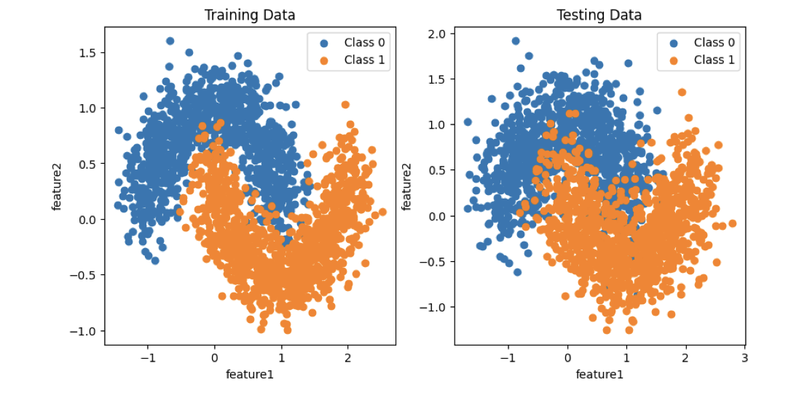

Applied Data Wrangling, ML & Deep Learning
FIT5196 · FIT5201 · FIT5215 · Monash University | Feb 2024 – Oct 2024

Overview
An end-to-end series of individual and pair projects across Monash's FIT5196 (Data Wrangling), FIT5201 (Machine Learning), and FIT5215 (Deep Learning) units — covering the full pipeline from raw, messy data all the way through classical classifiers and modern sequence models.
What was the challenge?
Real-world ML rarely starts with a clean dataset. The goal across these projects was to build a disciplined workflow — from wrangling raw text and transactional data, through classical models, to deep learning architectures — where every step was rigorously validated, compared, and reasoned about from first principles.
What I did
- Text Wrangling & NLP Pipeline (FIT5196 A1): Built an end-to-end text-extraction pipeline over raw YouTube comment data — parsing nested JSON snippets with regex, removing emojis via custom lists and the
emojilibrary, detecting language, filtering English comments, and tokenising output for downstream vectorisation. - Dirty Data, Outliers & Missing Value Handling (FIT5196 A2): Cleaned a multi-column order/customer dataset through a three-dataframe Agile-style workflow — fixing date, branch_code, lat/lon, order_type, order_items, order_price, and distance columns; detecting outliers; imputing missing values with linear regression; and reshaping data with Z-score and Min/Max normalisation.
- Perceptron vs. Neural Networks (FIT5201): Compared linear perceptrons against MLPs on 2D classification tasks, analysing decision boundaries and generalisation behaviour with scikit-learn.
- Semi-Supervised Learning (FIT5201): Built a pipeline combining labelled and unlabelled data, training neural networks with PyTorch and evaluating against a held-out test set.
- Deep Neural Networks from Scratch (FIT5215 A1): Implemented feed-forward networks, backpropagation, activation functions, and optimisation in PyTorch — scoring 89/100.
- RNNs for Question Classification (FIT5215 A2): Designed a modular
BaseRNNsupporting GRU, LSTM, and vanilla RNN cells with configurable depth and embedding sizes, classifying questions into 6 categories (ABBR, ENTY, DESC, HUM, LOC, NUM). - Transformers with BERT (FIT5215 A2): Fine-tuned Transformer architectures using the HuggingFace BERT tokenizer for the same question-classification task — part of the 96/100 submission.
Tools & skills
Python · pandas · NumPy · scikit-learn · PyTorch · HuggingFace Transformers · regex · NLP preprocessing · Data Cleaning · Outlier Detection · Missing Value Imputation · Feature Engineering · Model Evaluation · RNN / LSTM / GRU / Transformer architectures
Outcome
These projects strengthened my ability to move fluently across the full ML lifecycle — from raw, messy data through to state-of-the-art sequence models — and reinforced that good machine learning starts well before the model itself, with the data and the question you're really trying to answer.